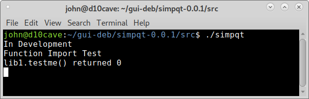

Importing Library¶
Add the subdirectory libsimpqt to simpqt-0.0.1/src for our library file. Add a lib1.py file to the libsimpqt directory.
Note
all the files that dpkg-buildpackage creates have been removed for clarity.
john@d10cave:~/gui-deb$ tree
.
└── simpqt
├── debian
│ ├── changelog
│ ├── compat
│ ├── control
│ ├── copyright
│ ├── install
│ ├── manpages
│ ├── rules
│ └── source
│ └── format
├── man
│ └── simpqt.1
├── Simple PyQt5.desktop
└── src
├── libsimpqt
│ └── lib1.py
├── simpqt
└── simpqt.ui
6 directories, 13 files
lib1.py¶
def testme():
print('Function Import Test')
return 0
simpqt¶
Modifications to the original simpqt file to import the library and test the import by calling the function.
#!/usr/bin/python3
import sys, os
from PyQt5.QtWidgets import QApplication, QMainWindow
from PyQt5 import uic
from libsimpqt import lib1
if os.path.split(sys.argv[0])[0] == '/usr/bin':
GUI_PATH = '/usr/lib/python3/dist-packages/libsimpqt'
print('Installed')
if os.path.split(sys.argv[0])[0] == '.':
GUI_PATH = os.path.split(os.path.realpath(sys.argv[0]))[0]
print('In Development')
# test that the import worked
print(f'lib1.testme() returned {lib1.testme()}')
class main(QMainWindow):
def __init__(self):
super().__init__()
path, filename = os.path.split(os.path.realpath(__file__))
uic.loadUi(os.path.join(GUI_PATH, 'simpqt.ui'), self)
self.setGeometry(50, 50, 500, 300)
self.setWindowTitle("PyQT5 Minimal!")
self.show()
if __name__ == '__main__':
app = QApplication(sys.argv)
gui = main()
sys.exit(app.exec_())
install¶
Add the installation location for the library file in the format file space location.
src/simpqt usr/bin
src/simpqt.ui usr/lib/python3/dist-packages/libsimpqt
*.desktop usr/share/applications
src/libsimpqt/*.* usr/lib/python3/dist-packages/libsimpqt
Open a terminal in the simpqt/src directory and test the program. The ./ means look in this directory for the executable file in linux.
As you can see the import of the library worked and it printed out to the terminal as expected.
Build the deb¶
As before open a terminal in the simpqt directory and use
dpkg-buildpackage -us -uc
In the gui-deb directory right click on the deb and open with Gdebi and install.
Run from the Applications > Accessories menu or from a terminal with the command simpqt.